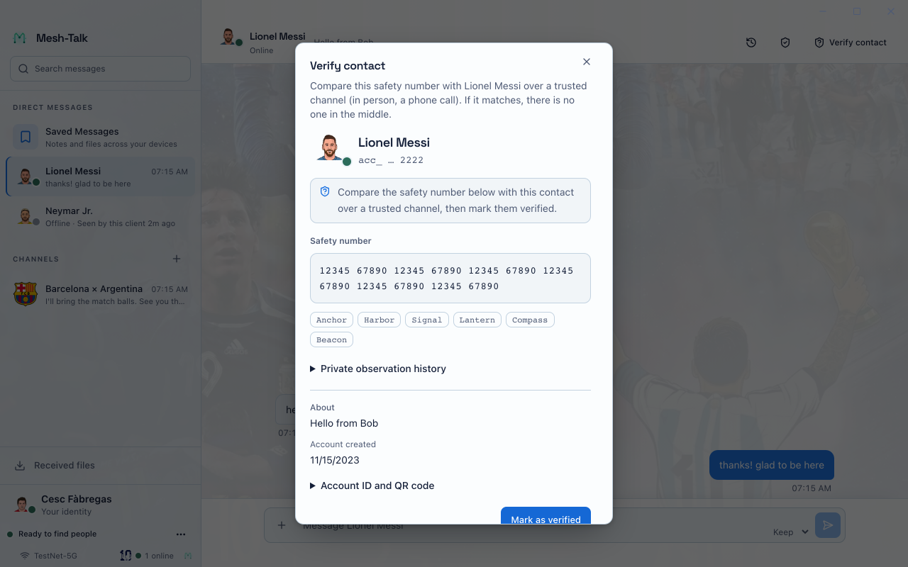
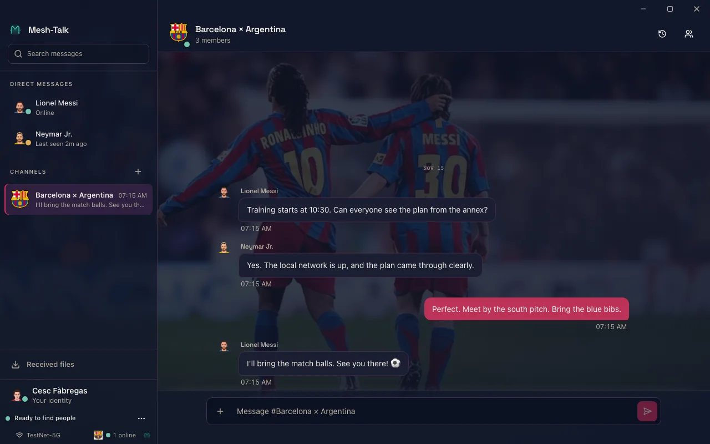
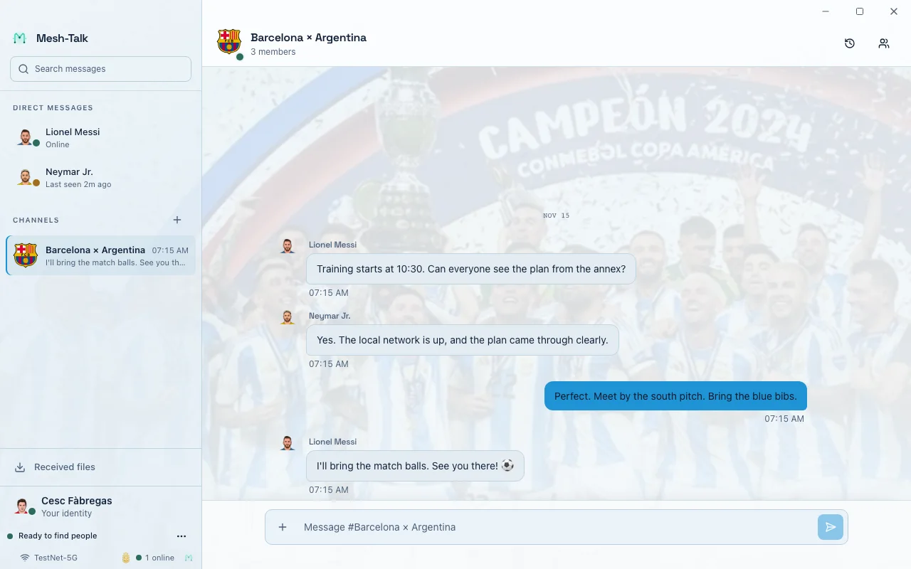
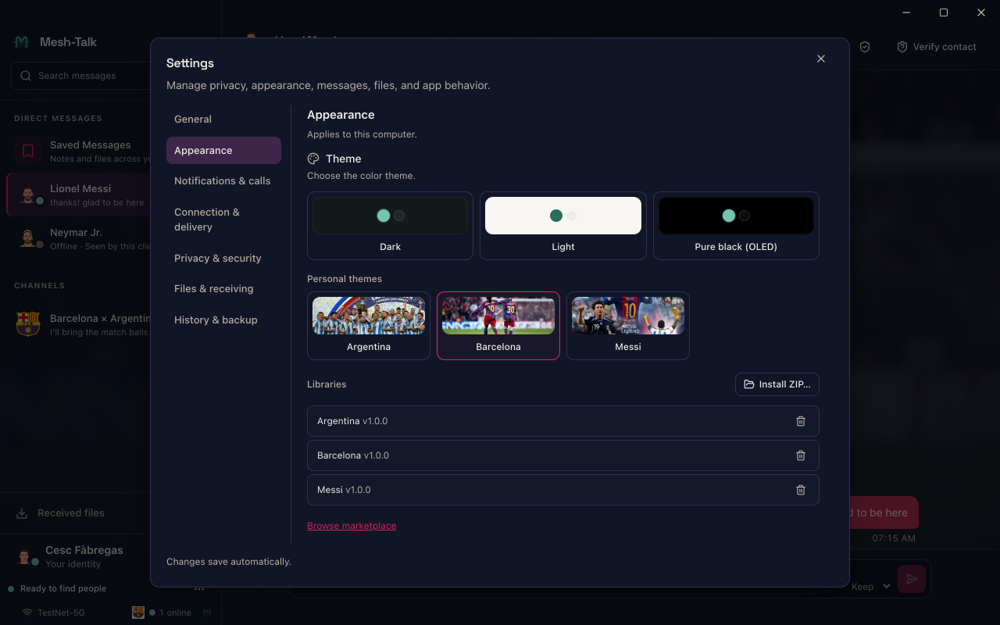

Encrypted conversations.
Across your networks.
Talk directly on a LAN, without a central server. Connect sites through routes you manage. When devices reconnect, authorized peers help recover retained messages and files.
macOS · Windows · LinuxNo cloud account required
Local first. Connected by choice.
Decentralized synchronization combines direct links, optional relays, and shared recovery. Your peers hold the conversation; no vendor-operated messaging service is required.
Meet nearby peers
Signed discovery finds devices on the same LAN, even without internet. Peers connect directly and sync encrypted events.
Reach another LAN
Use an existing route, such as your Tailscale network, to find reachable peers. Mesh-Talk verifies their identity separately.
Deliver while away
A peer-operated post office holds recipient-encrypted events temporarily, subject to capacity and a 30-day maximum age.
Recover together
Reconnect and request missing retained events from authorized peers. Group members can share a copy even when the original sender is unavailable.
Across LANs, when you choose.
For a group spread across sites, equal post offices exchange signed presence from opted-in devices and forward encrypted mailboxes through reachable, identity-pinned relay paths.
Clients choose to share signed presence with their relay.
The network supplies reachability; Mesh-Talk verifies the peer.
Either relay can hold and forward encrypted messages.
Relays synchronize encrypted mailboxes while a path exists and retain bounded copies when it fails. Message and file payloads stay encrypted; calls need their own live signaling and media paths. Relays do not join IP subnets. Read the communication architecture and federation setup.
A conversation can outlast a connection.
Devices go offline. Routes return. Missing history can come from another authorized group member, not only from the original sender.
-
A member keeps a copy
Participating members retain signed messages. With sharing enabled, a member can serve the retained history to other authorized members.
-
A peer comes back online
Reachable peers reconcile missing events. The conversation catches up incrementally while preserving message identity and order.
-
Files follow their availability
Approved transfers can resume from available retained chunks. A file card can arrive before its contents; another eligible member may supply retained file data.
Recovery depends on permission, connectivity and retained data. Copies are bounded; a completed peer check does not prove every offline member has nothing more to share. Post-office custody is separate from recipient confirmation.
Read about file availabilityYou can check it's the right person.
Compare a contact's safety number over a trusted channel, then mark them as verified. Mesh-Talk warns when a verified identity changes. Message content is end-to-end encrypted; a relay still sees routing metadata.


Everyday messaging, with local control.
One-to-one and group conversations with replies, reactions, mentions, and search.
Send media and files in encrypted chunks. Interrupted transfers can resume when an authorized source retains the content and receiving is approved.
Link certified devices to one account. Choose which history, file cards and attachment contents synchronize over reachable device-to-device paths.
Export an encrypted backup with a separate recovery key for restoring an account.
Choose notification, app lock, visibility, and local retention settings.
Choose an interface theme and add optional avatar, theme, or sticker packs.
See the desktop app.




Interface examples with deterministic football-themed demo identities and messages. These are UI captures, not network tests.
Get Mesh-Talk.
Stable is recommended for everyday use. Want to try recent changes? Browse Nightly prereleases. Nightly builds may contain bugs. You can also choose Nightly under More → About → Update channel in the app. Back up your local data before trying Nightly or returning to an older Stable installation.
Releases start without optional packs or animated sticker assets. Install packs later from the marketplace or a local ZIP. Desktop installers are not signed with Apple Developer ID or a commercial Windows certificate. Release notes explain first-run steps and signed archive verification. Prefer to build it yourself? Build from source.